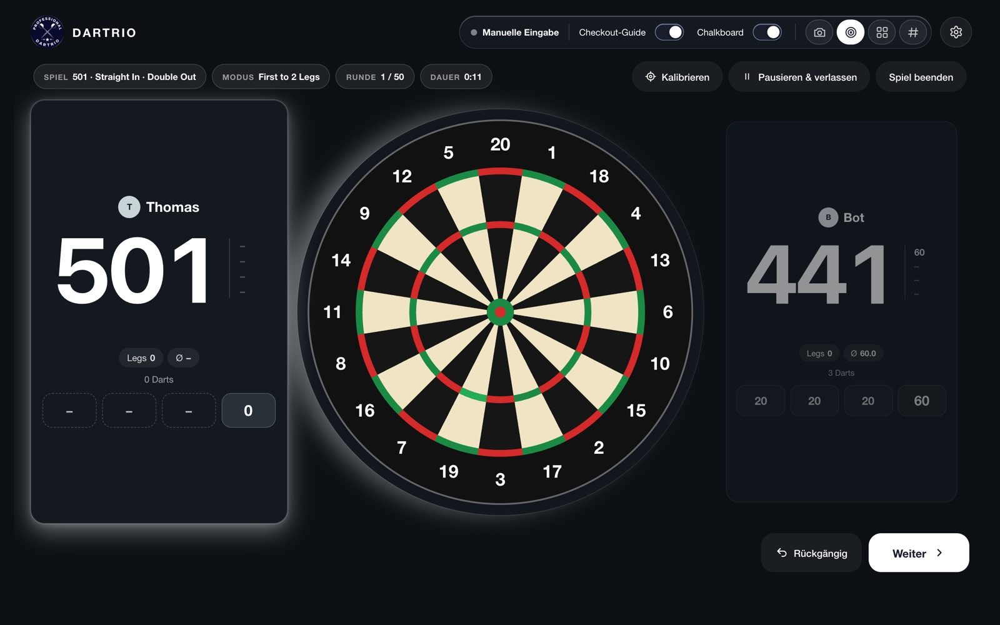
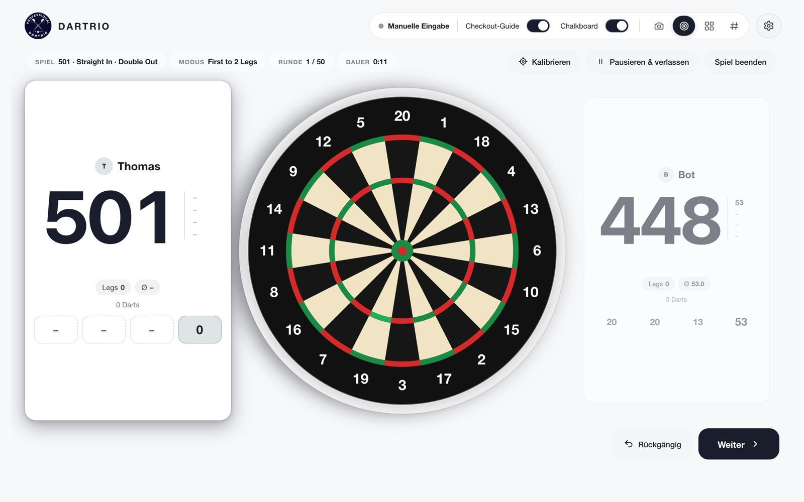
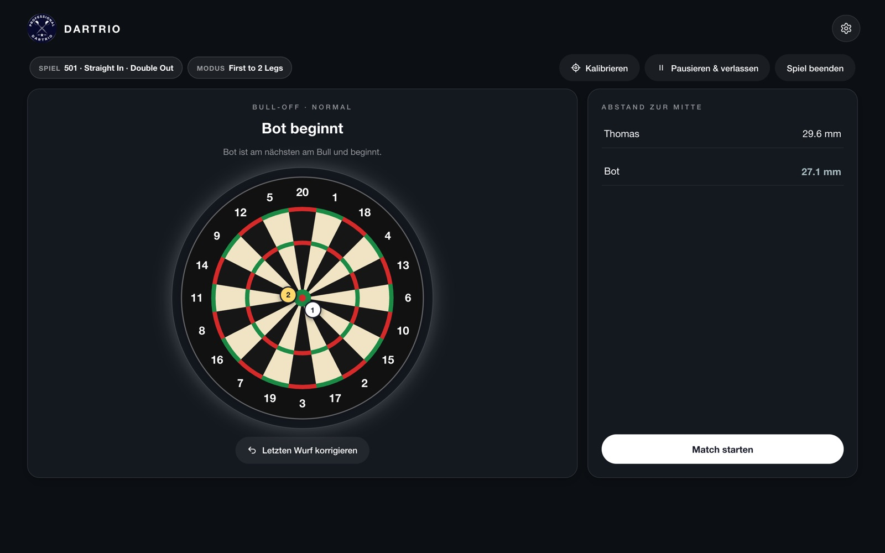
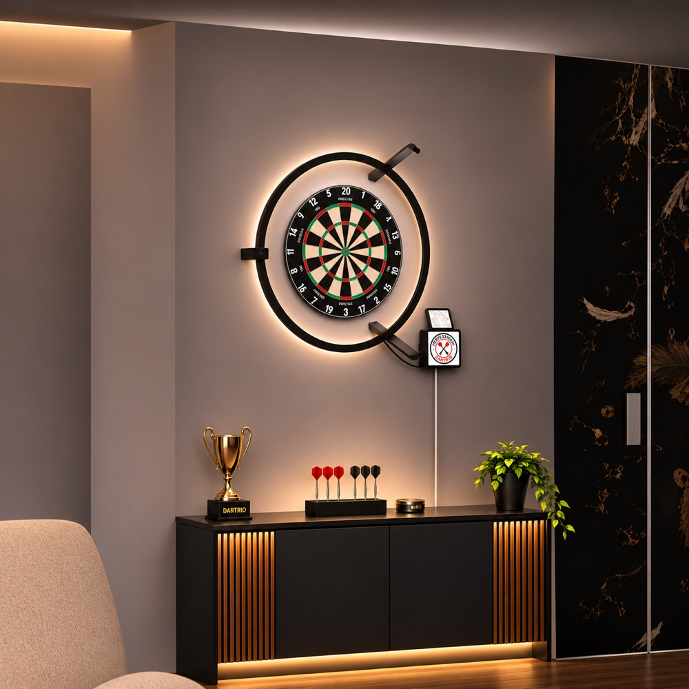

Du wirfst.
DARTRIO zählt.
Fünf Kameras rund um dein Board erkennen jeden Dart und tragen die Punkte automatisch ein – ohne Tippen, ohne Rechnen, ganz ohne Internet.

Konzentrier dich aufs Werfen.
Alles andere übernimmt die App – vom Bull-Off bis zum Checkout.
Automatisches Scoring
Fünf Kameras sehen jeden Dart aus einem anderen Winkel. DARTRIO berechnet daraus, wo er steckt, und zählt sofort.
Lieber ehrlich als falsch
Ist ein Dart nicht eindeutig – etwa direkt am Draht – zeigt DARTRIO ein „?“ statt falscher Punkte. Ein Tipp auf die Scheibe genügt.
Kalibriert sich selbst
Board leer lassen, starten – DARTRIO findet Scheibe und Kameras von allein und ordnet sie richtig zu.
501 & mehr
X01 mit Double Out, Legs, Bull-Off zum Ausbullen, Checkout-Guide und ein Bot als Gegner, wenn du allein trainierst.
Läuft komplett offline
Keine Cloud, kein Konto, keine Daten im Netz. Kameras und Erkennung laufen nur auf deinem Rechner.
Updates mit einem Klick
Gibt es eine neue Version, sagt DARTRIO beim Start Bescheid. Kalibrierung und Daten bleiben erhalten.
Klar, ruhig, auf den Punkt.
Große Zahlen, die man vom Oche aus lesen kann – in Hell und Dunkel.


In drei Schritten startklar.
Installieren
DARTRIO für Mac oder Windows laden und installieren – ganz unten auf dieser Seite.
Kalibrieren
Kameras anschließen, Board leer lassen, DARTRIO starten. Den Rest erledigt die App.
Spielen
Spiel wählen und werfen. Darts ziehen – die Aufnahme wird automatisch gebucht.

Was du brauchst
- Steeldart-Board nach Norm
- 5 USB-Kameras rund um das Board, gleichmäßig verteilt
- Mac mit Apple-Chip (M1 oder neuer, macOS 12.3+) oder Windows-PC (Windows 10/11, 64 bit)
- Gleichmäßiges Licht am Board – dann erkennt DARTRIO am zuverlässigsten
Neueste Version
Kostenlos für Mac und Windows.
Mac
Für dich- DMG öffnen, DARTRIO auf „Programme“ ziehen
- Beim ersten Start: Systemeinstellungen › Datenschutz & Sicherheit › „Dennoch öffnen“
- Kamera-Zugriff erlauben
Windows
Für dich- Setup starten und den Schritten folgen
- Falls Windows warnt: Weitere Informationen › Trotzdem ausführen
- DARTRIO über Startmenü oder Desktop öffnen